*CONTROLS
Keyword type: step
This option is used to change the iteration control parameters. Itshould only be used by those users who know what they are doing andare expert in the field. A detailed description of the convergence criteria isgiven in Section 6.10. There are two, mutually exclusiveparameter: PARAMETERS and RESET. The RESET parameter resets the control parameters to theirdefaults. The parameter PARAMETERS is used to change thedefaults. It can take the value TIME INCREMENTATION, FIELD, LINE SEARCH,NETWORK, CFD or CONTACT. If the TIME INCREMENTATION value isselected, the number of iterations before certain actions are taken(e.g. the number of divergent iterations before the increment isreattempted) can be changed and effect of these actions (e.g. theincrement size is divided by two). The FIELD parameter can be used tochange the convergence criteria themselves.
LINE SEARCHcan be used to change the line search parameters (only for face-to-facepenalty contact). The line search parameter scales the correction to thesolution calculated by the Newton-Raphson algorithm such that the residualforce is orthogonal to the correction. This requires the solution of anonlinear equation, and consequently an iterative procedure. In CalculiX thisprocedure is approximated by a linear connection between:
- the scalar product of the residual force from the last iteration with the solution correction in the present iteration (corresponds to a line search parameter of zero) and
- the scalar product of the residual force in the present iteration with the solution correction in the present iteration (corresponds to a line search parameter of one).
For details of the line seach algorithm the reader is referred to [84].With the NETWORK parameter the convergence criteria for networkiterations can be changed. The parameters  ,
,  and
and  express the fraction of the mean energy balance, mass balance and elementbalance terms the energy balance residual, the mass balance residual and theelement balance residual is not allowed to exceed, respectively. The parameters
express the fraction of the mean energy balance, mass balance and elementbalance terms the energy balance residual, the mass balance residual and theelement balance residual is not allowed to exceed, respectively. The parameters  ,
, ,
,  and
and  is the fraction of the change in temperature,mass flow, pressure and geometry since the beginning of the increment the temperature, mass flow, pressure and geometry change in the actual networkiteration is not allowed to exceed, respectively.
is the fraction of the change in temperature,mass flow, pressure and geometry since the beginning of the increment the temperature, mass flow, pressure and geometry change in the actual networkiteration is not allowed to exceed, respectively.
With the CFD parameter the maximum number of iterations in certainfluid loops can be influenced. A fluid calculation within CalculiX istriggered at the start of a new mechanical increment. This increment issubdivided into fluid increments based on the physical fluid properties. Foreach fluid increment iterations are performed. In steady state calculationsonly one iteration is performed, since no time-accurate solution isneeded. In transient calculations iterations are performed until convergenceof the fluid increment or until the maximum allowed number of iterations isreached. This is the first parameter 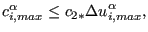 (``transient''). In fluidcalculations the unknowns in the equation systems are the quantities(velocity..) at the element centers. The values at the face centers and thegradients are calculated based on these element center quantities. In case themesh is not orthogonal, iterations have to be performed. The number of theseiterations is expressed by 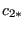 (``geometry'') and 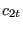 (takingnon-orthogonality into account in the pressure correction equation,``pressure''). This is the second and third parameter. For a perfectlyrectangular grid these values can be set to zero.
Finally, the CONTACT parameter is used to change defaults in the face-to-facepenalty contactconvergence algorithm (cf. Section 6.10.2). This relates to
- the maximum relative difference in number of contact elements to allow forconvergence (delcon). The corresponding absolute difference, which may not beexceeded is defined as the number of contact elements in the previousiteration times delcon.
- the fraction of contact elements which is removed in analeatoric way before repeting an increment in case of a local mimimum in thesolution (alea)
- the integer factor by which the normal spring stiffness (incase of linear pressure-overclosure) and stick slope are reduced in case ofdivergence or too slow convergence (kscalemax)
- the maximum number of iterions perincrement (itf2f).
First line:
- *CONTROLS
- Enter the PARAMETERS parameter and its value, or the RESET parameter.
There are no subsequent lines if the parameter RESET is selected.
Following lines if PARAMETERS=TIME INCREMENTATION is selected:
Second line:
 iteration after which a check is made whether theresiduals increase in two consecutive iterations (default: 4). If so,the increment is reattempted with 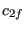 times its size.
iteration after which a check is made whether theresiduals increase in two consecutive iterations (default: 4). If so,the increment is reattempted with 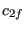 times its size. iteration after which a logarithmic convergence check isperformed in each iteration (default: 8). If more than
iteration after which a logarithmic convergence check isperformed in each iteration (default: 8). If more than  iterations are needed, the increment is reattempted with 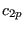 its size.
iterations are needed, the increment is reattempted with 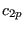 its size.- 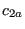 iteration after which the residual tolerance 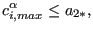 is usedinstead of 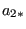 (default: 9).
- maximum number of iterations allowed (default: 16).
- 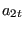 number of iterations after which the size of thesubsequent increment will be reduced (default: 10).
- 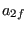 maximum number of iterations allowed in two consecutiveincrements for the size of the next increment to be increased(default: 4).
- 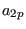 Currently not used.
- 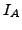 Maximum number of cutbacks per increment (default: 5). Acutback is a reattempted increment.
- 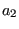 Currently not used.
- 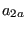 Currently not used.
Third line:
- Cutback factor if the solution seems to diverge(default: 0.25).
- Cutback factor if the logarithmic extrapolation predictstoo many iterations (default: 0.5).
- 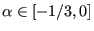 Cutback factor for the next increment if more than iterations were needed in the current increment (default: 0.75).
- 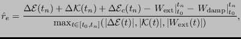 Cutback factor if the temperature change in two subsequent increments exceeds DELTMX (default: 0.85).
- 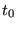 Currently not used.
- 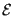 Currently not used.
- 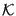 Factor by which the next increment will be increased ifless than iterations are needed in two consecutive increments (default: 1.5).
- 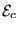 Currently not used.
Following line if PARAMETERS=FIELD is selected:
Second line:
- 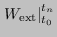 Convergence criterion for the ratio of the largestresidual to the average force (default: 0.005). The average force isdefined as the average over all increments in the present step of theinstantaneous force. The instantaneous force in an increment isdefined as the mean of the absolute value of the nodal forcecomponents within all elements.
- 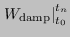 Convergence criterion for the ratio of the largestsolution correction to the largest incremental solution value (default: 0.01).
- 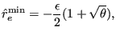 Initial value at the start of a new step of thetime average force (default: the time average force from the previous steps or 0.01 for the first step).
- 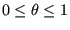 user-defined average force. If defined, thecalculation of the average force is replaced by this value.
- 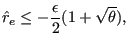 Alternative residual convergence criterion to beused after iterations instead of (default: 0.02).
- 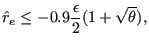 Criterion for zero flux relative to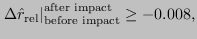 (default:
 ).
). - 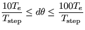 Convergence criterion for the ratio of thelargest solution correction to the largest incremental solution valuein case of zero flux (default:
 ).
).  Convergence criterion for the ratio of the largestresidual to the average force for convergence in a single iteration (default: 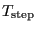).
Convergence criterion for the ratio of the largestresidual to the average force for convergence in a single iteration (default: 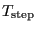).
Following line if PARAMETERS=LINE SEARCH is selected:
Second line:
- not used.
- 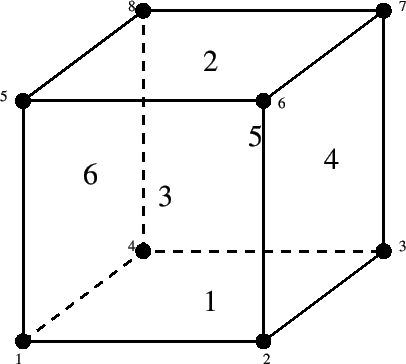 Maximum value of the line search parameter (default: 1.01).
- 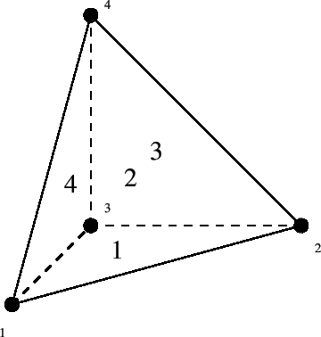 Minimum value of the line search parameter (default: 0.25).
- not used.
- not used.
Following line if PARAMETERS=NETWORK is selected:
Second line:
- (default: 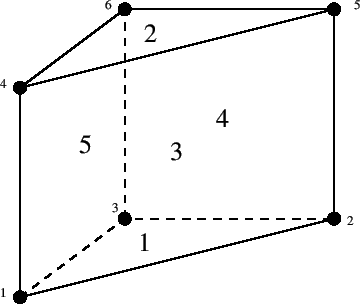).
- (default: ).
- (default: ).
- (default: ).
- (default: ).
- (default: ).
- (default: ).
Third line:
 (default:
(default:  ).
). (default: ).
(default: ). (default: ).
(default: ). (default: ).
(default: ). (default: ).
(default: ). (default: ).
(default: ).- 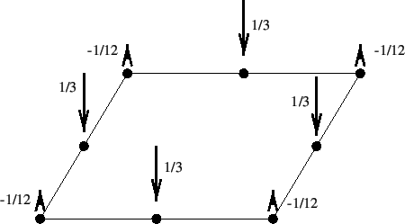 (default: ).
Following line if PARAMETERS=CFD is selected:
Second line:
- (default: 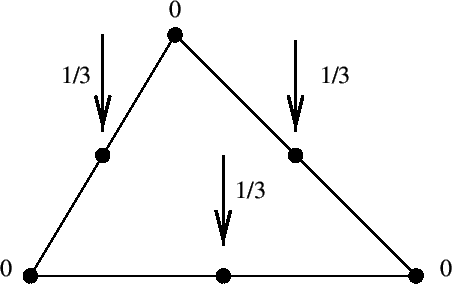).
- (default:
 ).
). - (default: ).
Following line if PARAMETERS=CONTACT is selected:
Second line:
- delcon (
 ; default: 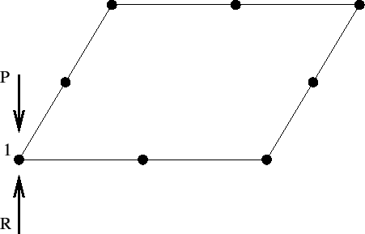).
; default: 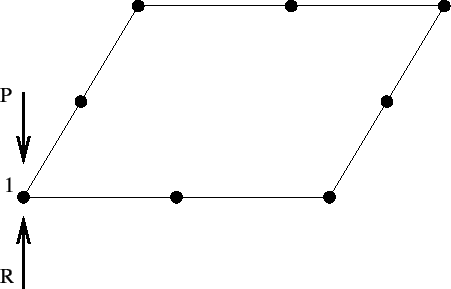). - alea (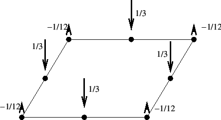 alea 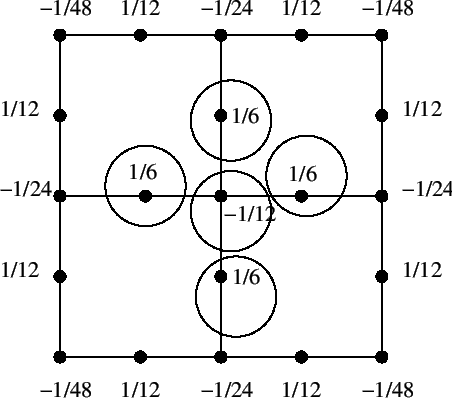; default: 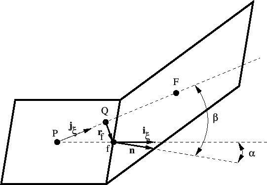).
- kscalemax (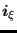, integer; default:
 ).
). - itf2f (, integer; default: 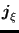).
Example:
*CONTROLS,PARAMETERS=FIELD
1.e30,1.e30,0.01,,0.02,1.e-5,1.e-3,1.e-8
leads to convergence in just one iteration since nearly any residualsare accepted for convergence (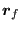 and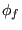.
Example files: beammrco.